씰M2 모바일MMORPG 사전예약 프리뷰, 활기 넘치는 쉴츠 정식 출시 예정일 10월 22일과 100만 돌파 리워드
※ 해당 게임은 확률형 아이템을 포함하고 있습니다.
안녕하세요, 영원한도시입니다. 오늘은 플레이위드코리아가 서비스하는 신작 모바일 MMORPG 씰M2 사전예약 소식을 정리해 왔어요.
공식 발표된 정식 출시 예정일은 2026.10.22(목)이고, 오늘(10월 13일) 기준으로 D-9입니다. 다만 공식 공지에 서비스 준비 상황에 따라 바뀔 수 있다고 적혀 있어서, 변동이 생기면 공식 포럼 안내를 확인하시면 돼요.
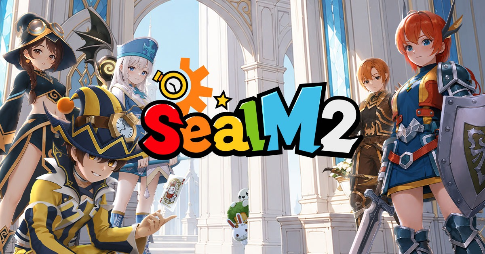
씰M2 공식 키 비주얼, 로고 양옆으로 모여 있는 클래스 5종 캐릭터
이미지 출처: 씰M2 공식 사전예약 사이트
사전예약 인원은 이미 100만 명을 넘겼고, 누적 리워드 5단계도 전부 열렸네요. 출시 전에 챙길 수 있는 이벤트도 한 번에 묶어 봤습니다.
1. 출시 예정일과 사전예약 방법
씰M2의 정식 출시 예정일은 2026년 10월 22일(목)이고, 공식 공지는 이 날짜를 목표로 준비하고 있다고 밝혔어요.
10월 8일 올라온 일정 안내 공지에는 일정이 변경되면 공식 포럼으로 알리겠다는 문구가 있어요. 오픈 시간은 아직 나오지 않았고, 추후 정식 오픈 공지에서 안내됩니다.
사전예약은 9월 3일(목)에 시작해 정식 출시 전까지 이어지는데, 종료 일시는 아직 안내가 없어요. 방법은 두 갈래입니다.
- 공식 사전예약 : 사전예약 사이트에서 휴대폰 번호 등록 → 필수 동의 → 완료 (만 19세 이상, 휴대폰 번호 1개당 1회)
- 스토어 사전예약 : Google Play의 사전 등록 버튼 또는 App Store의 사전 주문 버튼으로 신청
공식 사전예약 링크는 여기예요. https://www.sealm2.com/#register
2. 사전예약 누적 현황, 5단계 전부 달성
공식 사전예약 사이트 집계 기준으로 2026년 10월 13일 0시 무렵 사전예약자는 1,117,824명인데요, 10만부터 100만까지 5단계 목표를 모두 넘겼어요.
공식 사이트에 사전예약자 수가 실시간으로 반영되지 않을 수 있다는 안내가 붙어 있으니, 숫자는 확인 시점 기준으로 봐 주세요. 최종 달성 여부는 운영팀 집계 자료를 기준으로 확정된다고 해요.
| 누적 인원 | 달성 보상 | 현재 상태 |
|---|---|---|
| 10만 명 | 빠른 이동 티켓 10장 | 달성 |
| 30만 명 | 즉시 부활 티켓 5장 | 달성 |
| 50만 명 | 코스튬 소환 티켓 10장 | 달성 |
| 80만 명 | 오파츠 소환 티켓 10장 | 달성 |
| 100만 명 | 계승의 기간테스(오파츠) 1개 | 달성 |
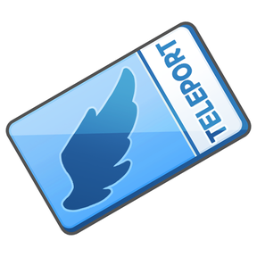
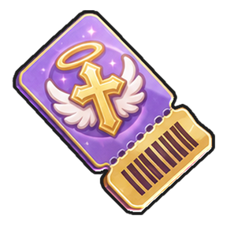
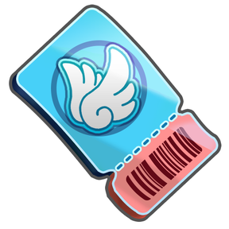
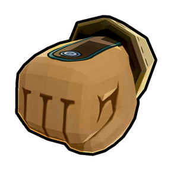
왼쪽부터 10만, 30만, 50만, 80만, 100만 명 달성 보상 아이콘
이미지 출처: 씰M2 공식 사전예약 사이트
100만 명 단계까지 달성했으니 누적 리워드 5종을 모두 받을 수 있어요(최종 확정은 운영팀 집계 기준). 지급 대상은 공식 사전예약에 참여한 모든 모험가이고, 지급 시점은 정식 출시 후입니다.
수령 방법은 추후 별도 공지로 안내된다고 하니, 출시 즈음 공식 포럼 공지를 꼭 확인해 두세요. 참고로 오파츠는 캐릭터 능력치를 올려 주는 외형 장비예요.
3. 사전예약 보상, 소환 티켓과 가더
공식 사전예약(휴대폰 번호 등록)으로는 코스튬 소환 티켓 50장과 오파츠 소환 티켓 50장을, 스토어 사전예약으로는 명마 알렉산드라(가더) 1개를 받아요.
| 구분 | 신청 방법 | 보상 |
|---|---|---|
| 공식 사전예약 | 사전예약 사이트에서 휴대폰 번호 등록 | 코스튬 소환 티켓 50장 + 오파츠 소환 티켓 50장 |
| 스토어 사전예약 | Google Play 사전 등록·App Store 사전 주문 (AOS·iOS 동일) | 명마 알렉산드라(가더) 1개 (계정당 1회) |
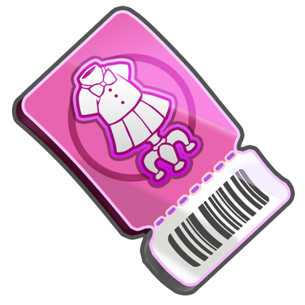
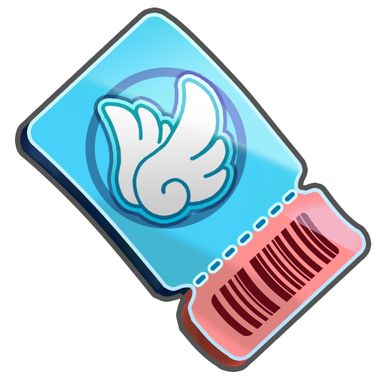
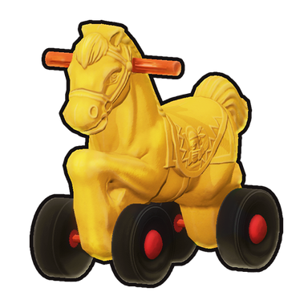
왼쪽부터 코스튬 소환 티켓, 오파츠 소환 티켓, 스토어 사전예약 보상 명마 알렉산드라예요
이미지 출처: 씰M2 공식 사전예약 사이트
보상은 정식 출시 후에 지급되고 수령 방법은 추후 별도 공지로 안내돼요. 여러 서버에 캐릭터가 있어도 스토어 보상은 계정당 1회만 지급돼요.
저는 소환 티켓이 코스튬과 오파츠 두 갈래로 50장씩 나온다는 점이 반가웠어요. 출시 직후 외형을 맞춰 보는 재미가 쏠쏠할 것 같네요.
4. 정식 출시 전까지 진행되는 이벤트 7개
출시 전까지 참여할 수 있는 이벤트는 사전예약 누적부터 친구 초대왕까지 모두 7개예요.
| 이벤트 | 기간 | 참여 방법 | 보상 |
|---|---|---|---|
| 사전 예약 누적 | 9/3 ~ 정식 출시 전 | 공식 사전예약 완료 시 자동 참여 | 10만~100만 명 단계별 5종 (위 2번 섹션 표 참고) |
| 친구 초대 | 9/3 ~ 정식 출시 전 | 사전예약 후 나만의 초대 링크 발급, 친구가 링크로 사전예약 완료 | 1명 코스튬 소환 티켓 10장 + 오파츠 소환 티켓 10장 / 2명 각 20장 / 3명 각 30장 (달성한 최종 단계 보상만 지급, 3명 초과 추가 보상 없음) |
| 공식 포럼 가입 | 9/3 ~ 정식 출시 전 | 공식 포럼 가입 후 가입 상태를 유지하고, 출시 후 같은 계정(Google·Apple)으로 게임 접속 (게시글·댓글 불필요, 만 19세 이상) | 펫 큐브 10개 |
| 사전 예약 인증 | 9/3 ~ 정식 출시 전 | 사전예약 완료 화면(또는 초대 링크 확인 화면) 스크린샷을 인증 게시판에 등록 | 참여 인원 100명 달성 시 코스튬 소환권 5장 / 200명 달성 시 오파츠 소환권 5장 / 300명 달성 시 코스튬 소환권 5장 + 오파츠 소환권 5장 (출시 이후 공개되는 쿠폰, 모든 모험가가 사용 가능, 누적하여 획득) |
| 나의 전직은 바로! | 9/8(화) ~ 정식 출시 전 | 가장 선택하고 싶은 직업 투표 + 이유 댓글 (둘 다 해야 인정) | 세겔 40,000개 + 빠른 이동 이용권 10장 + 무기 강화석 10개 + 방어구 강화석 10개 (참여자 전원 동일) |
| 추억의 씰, 그리고 새로운 씰의 이야기 | 9/11 ~ 정식 출시 전 | 해당 공지 댓글에 씰 추억 또는 씰M2 기대평 작성 | 세겔 30,000 + 무기 강화석 10개 + 방어구 강화석 10개 (계정당 1회) |
| 친구 초대왕 | 9/11 ~ 사전 예약 종료 시까지 | 사전예약 종료 시점의 친구 초대 인원 1~10위 | 1위 코스튬 소환권 1,000개 + 오파츠 소환권 1,000개 / 2~5위 각 500개 / 6~10위 각 300개 (쿠폰은 출시 후 사전예약 휴대폰 번호로 전송) |
표의 보상 이름은 공식 원문 표기를 그대로 적었어요. 공식 원문이 이벤트마다 소환 티켓과 소환권, 빠른 이동 티켓과 이용권을 섞어 쓰고 있습니다.
사전예약과 연결된 이벤트는 만 19세 이상만 참여할 수 있고, 휴대폰 번호 1개당 1회만 인정돼요. 종료 시각은 이벤트 공지에서 확인해 주세요.
친구 초대는 초대 링크로 친구가 사전예약을 마치면 단계가 올라가는 방식이에요.
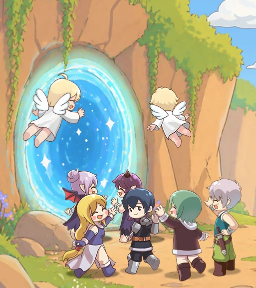
친구 초대 이벤트 일러스트예요, 초대 링크로 사전예약한 친구가 늘수록 보상이 커져요
이미지 출처: 씰M2 공식 사전예약 사이트
친구 초대왕 순위는 9월 23일 중간 집계 기준으로 1위 80명, 2·3위 66명, 10위 18명이었어요. 최종 집계에 따라 달라질 수 있으니 참고 정도로만 봐 주세요.
친구 초대왕 이벤트 배너
이미지 출처: 씰M2 공식 사전예약 사이트
공식 포럼 가입은 글을 따로 쓰지 않아도 되는 가장 가벼운 이벤트예요. 가입 상태를 유지한 채 출시 후 같은 계정으로 접속해야 보상을 받습니다. 보상인 펫 큐브는 8번 항목에서 다시 나와요.
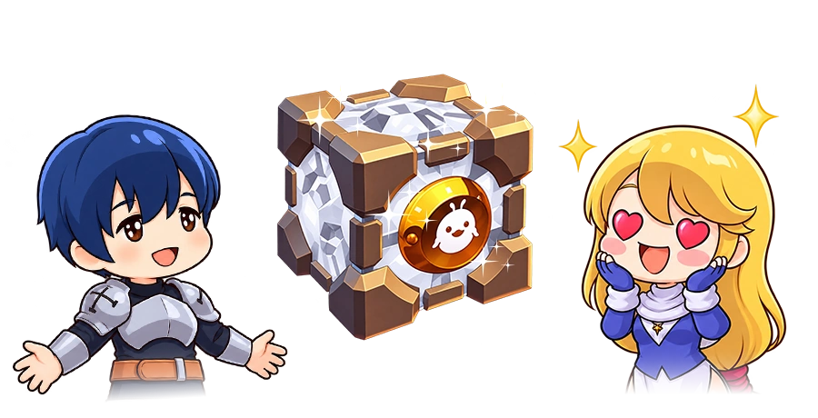
공식 포럼 가입 이벤트 보상인 펫 큐브 그림이에요(보상은 10개)
이미지 출처: 씰M2 공식 사전예약 사이트
5. 활기 넘치는 세계 쉴츠
씰M2의 무대는 대륙 쉴츠예요. 씰 온라인에서 이어진 씰 IP 신작이 그려 내는 세계입니다.
공식 세계관 소개는 이번 쉴츠를 우리가 알던 쉴츠와 닮았지만 어딘가 다른 세계로 설명합니다. 삐야 레터 7편에서는 원작 씰과 씰 온라인에서 이어지는 다음 장의 이야기를 목표로 한다고 밝혔어요.
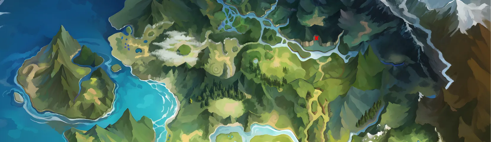
쉴츠 대륙을 한눈에 보여 주는 월드 일러스트
이미지 출처: 씰M2 공식 사전예약 사이트
삐야 레터 1편 기준으로 주인공은 크루드 산맥의 고요한 무덤가에서 눈을 뜨며 이야기가 시작돼요. 30여 년 전 자취를 감춘 줄 알았던 바일들과 마주하는 장면도 소개돼 있습니다.
월드 분위기는 9월 30일 공식 유튜브에 올라온 영상으로도 볼 수 있어요. 제목은 '[씰M2] 월드 소개 영상 (걸어서 쉴츠속으로)'이고, 아래 영상 보기 링크로 이동할 수 있어요.
월드 소개 영상 썸네일이에요, 아래 영상 보기 링크로 이동할 수 있어요
이미지 출처: 씰M2 공식 유튜브(PLAYWITH KOREA)
▶ 영상 보기 : [씰M2] 월드 소개 영상 (걸어서 쉴츠속으로) (2026.09.30)
6. 클래스 5종과 전투 방식
클래스는 기사, 광대, 사수, 마법사, 성직자 5종이고, 전투 방식은 스위칭·강화 공격·콤보로 갈립니다.


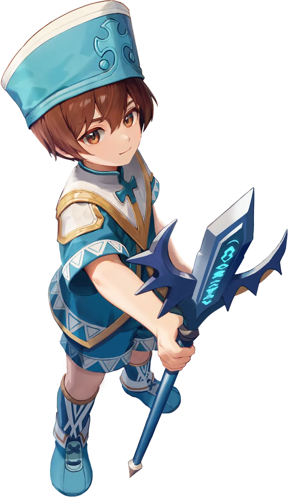
왼쪽부터 기사, 광대, 사수, 마법사, 성직자 일러스트
이미지 출처: 씰M2 공식 사전예약 사이트
| 클래스 | 전투 방식 | 핵심 요소 | 궁극기 |
|---|---|---|---|
| 기사 | 스위칭 | 검·방패를 바꿔 방어, 제어, 공격 담당 | 찬란한 섬광 |
| 광대 | 스위칭 | 중독을 쌓은 뒤 격발, 단일·범위 스위칭 | JQKA |
| 사수 | 강화 공격 | 게이지를 활용한 강화 공격 | 데드 존 프로토콜 |
| 마법사 | 콤보 | 콤보 스킬과 광역 마법 | 그랑 미티어 사브르 |
| 성직자 | 강화 공격 | 게이지를 활용한 강화 공격, 회복과 원거리 공격 | 생츄어리 |
삐야 레터 7편은 클래스를 바꾸면 플레이 감각 자체가 달라지도록 만드는 것이 목표라고 설명했어요. 저는 같은 5종 안에서 스위칭과 콤보가 어떻게 갈리는지가 제일 궁금합니다.
7. 코스튬과 오파츠 시스템
코스튬은 한 벌로 이어지는 일체형이고, 오파츠는 투구·얼굴·등·꼬리·글러브 5부위로 나뉘어요.
두 가지 모두 능력을 장착하는 칸과 외형을 장착하는 칸이 따로 있어서, 능력과 겉모습을 나눠 고를 수 있어요. 같은 서버의 캐릭터끼리는 보유가 공유되고 장착은 캐릭터별로 따로 합니다.
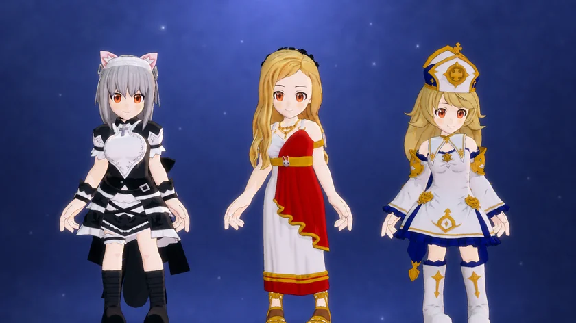
코스튬을 입은 캐릭터들이에요, 한 벌만 바꿔도 분위기가 꽤 달라 보이죠
이미지 출처: 씰M2 공식 사전예약 사이트
소환에는 코스튬과 오파츠 각각의 소환 티켓이 먼저 쓰이고, 부족한 만큼은 루비로 채웁니다. 소환·합성·초월의 세부 조건과 확률은 추후 별도 가이드로 안내된다고 해요.
코스튬과 오파츠는 10월 2일 올라온 '[씰M2] 코스튬 및 오파츠 소개영상 (씰Look)'에서 직접 볼 수 있어요.
코스튬 및 오파츠 소개영상 썸네일이에요, 아래 영상 보기 링크로 이동할 수 있어요
이미지 출처: 씰M2 공식 유튜브(PLAYWITH KOREA)
▶ 영상 보기 : [씰M2] 코스튬 및 오파츠 소개영상 (씰Look) (2026.10.02)
8. 펫과 가더 시스템
펫은 '펫 비타 던전'에서 얻은 '펫 큐브'를 '펫 부화기'에 넣고 일정 시간을 기다리면 손에 들어와요.
얻은 펫은 진화와 계승으로 키워 가고, 쓰임이 줄어든 펫은 '놓아주기'로 진화 재료로 바꿀 수 있어요. 펫 큐브는 위에서 본 공식 포럼 가입 이벤트로도 10개를 받습니다.
가더는 모험가가 타고 다니는 이동 수단이고, 사전예약 보상인 명마 알렉산드라도 가더 중 하나예요. 첫 가더는 메인 스토리를 진행하면 얻고, 추가 가더는 콘텐츠 상점이나 업적 보상으로 모읍니다.
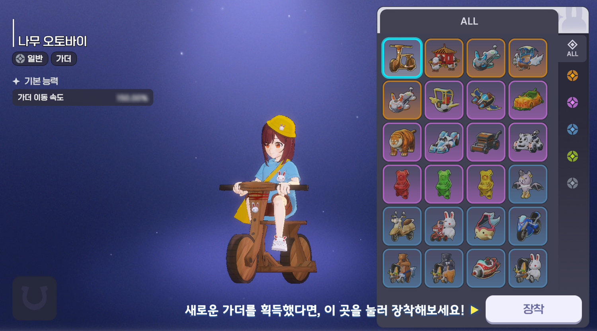
가더 장착 화면이에요, 오른쪽 목록에서 새 가더를 골라 장착해요 (개발 중 화면, 정식 출시 시 변경될 수 있음)
이미지 출처: 씰M2 공식 포럼 삐야 레터
탑승 중 이동 속도는 능력 장착 칸에 올린 가더 기준으로 적용돼요. 외형은 '외형 장착'에서 따로 고르고, 등급별로 일정 개수를 모으면 보유 효과도 붙습니다.
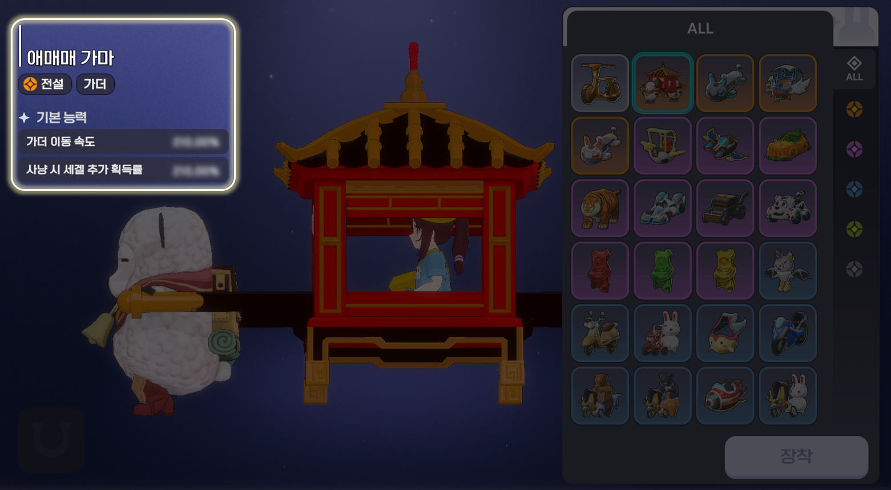
전설 등급 가더 화면이에요, 기본 능력에 이동 속도와 사냥 시 세겔 추가 획득률 항목이 보여요 (개발 중 화면, 정식 출시 시 변경될 수 있음)
이미지 출처: 씰M2 공식 포럼 삐야 레터
환경설정에는 비전투 이동 중 가더 자동 탑승 옵션이 있어서, 켜 두면 이동하다가 알아서 가더에 올라타요.
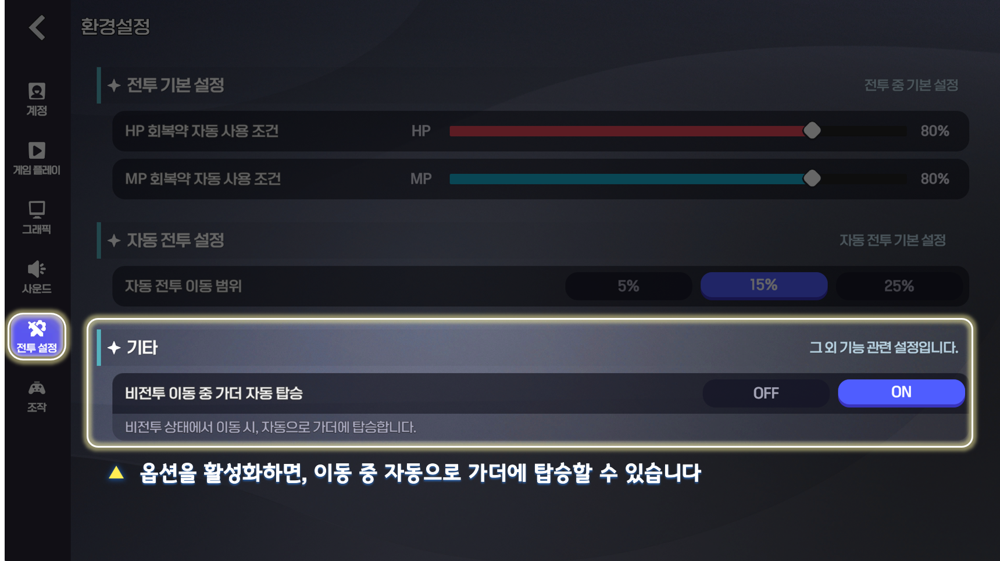
환경설정 화면이에요, 기타 항목에 비전투 이동 중 가더 자동 탑승 옵션이 있어요 (개발 중 화면, 정식 출시 시 변경될 수 있음)
이미지 출처: 씰M2 공식 포럼 삐야 레터
9. 공식 포럼과 영상
공식 포럼은 게시판마다 성격이 나뉘어 있어서 필요한 곳만 골라 보시면 돼요.
- 공지 게시판 : 사전예약, 출시 일정, 운영 정책 공지
- 삐야 레터 게시판 : 세계관, 직업, 던전, 가더, 코스튬과 오파츠, 길드까지 소개하는 소식 레터
- 이벤트 안내 게시판 : '나의 전직은 바로!', 사전예약 인증 이벤트 등 진행 중인 이벤트
- 길드 사전 모집 게시판 : 미리 길드원을 모집해 둘 수 있는 게시판
길드는 22레벨부터 가입하거나 만들 수 있고, 처음에는 최대 20명까지 모일 수 있어요.
공식 유튜브 채널 @playwithkorea에서 10월 13일 확인한 가장 최근 씰M2 영상은 10월 8일 올라온 [씰M2] 개발자 코멘터리입니다. 같은 영상을 삐야 레터 7편에서는 개발자 인터뷰 영상으로 소개해요.
개발자 코멘터리 썸네일이에요, 아래 영상 보기 링크로 이동할 수 있어요
이미지 출처: 씰M2 공식 유튜브(PLAYWITH KOREA)
▶ 영상 보기 : [씰M2] 개발자 코멘터리 (2026.10.08) / 공식 유튜브 채널
핵심만 추리면 씰M2는 10월 22일(목) 정식 출시 예정이고, 사전예약은 100만 명을 넘겨 누적 리워드 5종이 전부 열렸어요. 사전예약 링크는 아래에 달아 뒀으니, 출시일 변동 여부는 공식 포럼 공지로 같이 확인해 주세요!
참고한 곳 (2026-10-13 기준)
· 씰M2 공식 포럼 공지 정식 출시 일정 안내 (2026.10.08)
· 씰M2 공식 포럼 공지 공식 사전예약 보상 안내 (2026.09.03)
· 씰M2 공식 포럼 이벤트 안내 사전 예약 누적 이벤트
· 씰M2 공식 포럼 이벤트 안내 친구 초대왕 이벤트
· 씰M2 공식 포럼 삐야 레터 7편
· 씰M2 공식 사전예약 사이트
▶ 같이 보면 좋은 글
· 캐쥬얼 모바일MMORPG 씰M 2차 전직 140레벨 확장 대규모 업데이트 할만한게임